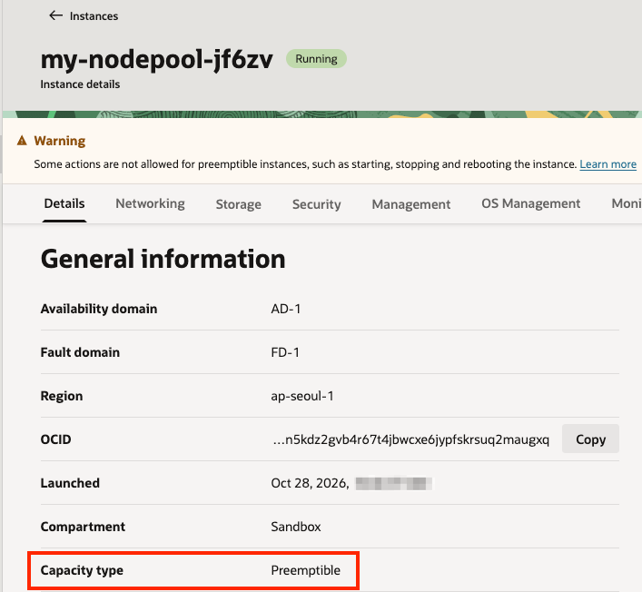
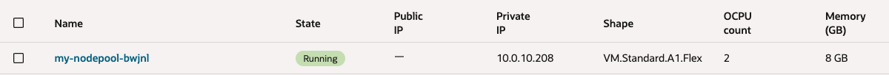
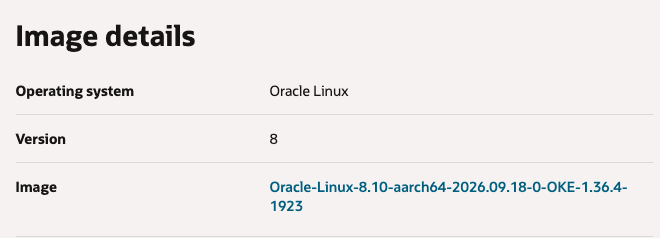

3.3 Autoscaling - Karpenter Provider for OCI (KPO) 사용하기
Cluster Autoscaler를 사용하여 OKE 노드스케일할 수 있습니다. 쿠버네티스 노드스케일을 위해 많이 사용되는 툴로 karpenter가 있습니다. [karpenter-provider-oci]는 OCI를 위한 karpenter 구현체로, OKE 클러스터를 지원합니다. karpenter-provider-oci는 오라클에서 관리하고 있습니다.
OKE 클러스터 준비하기
Karpenter Provider for OCI 설치 요구사항에 맞게 환경을 준비합니다.
-
OKE Cluster (Kubernetes version >= v1.31) 필요
-
OKE Managed Node Pool 또는 Self-Managed Nodes:
- KPO가 실행될 노드 필요
- 여기서는 2노드 Node Pool 1개 생성함
-
CNI:
- OCI VCN IP Native CNI 애드온을 사용하는 경우, 애드온 버전 3.2.0 이상
- 본 테스트에서는 Flannel CNI로 설치
- OciIpNativeCNI: NativePodNetworking을 사용하는 경우, 3.0.0 이상이면이 필요하지면, 최신 버전 또는 3.2.0 이상 버전을 사용합니다.
-
Helm client: 설치 필요
-
Enhanced Cluster
OCI IAM Dynamic Group 및 Policy 만들기
-
Workload Identity를 위한 Dynamic Group을 만듭니다
-
Name: 예,
oke-workload-type-dyn-grpALL { resource.type='workload' }
-
-
Self-Managed 노드로 추가할 Compute 인스턴스를 포함하는 Dynamic Group을 만듭니다.
-
Name: 예,
oke-self-managed-node-dyn-grpALL {instance.compartment.id = '<compartment-ocid>'}
-
-
생성한 Dynamic Group을 위한 Policy를 만듭니다.
-
Name: 예,
oke-karpenter-policy<compartment-name>는 원하는 값으로 변경- KPO의 기본 기능을 위한 정책입니다. 추가적인 기능을 사용하는 경우 Granting IAM Permissions to Karpenter Provider for OCI 문서를 참조하여 그에 맞는 정책을 추가합니다.
Allow dynamic-group oke-workload-type-dyn-grp to manage instance-family in compartment <compartment-name> where all {request.principal.namespace = 'karpenter',request.principal.service_account = 'karpenter'} Allow dynamic-group oke-workload-type-dyn-grp to manage volumes in compartment <compartment-name> where all {request.principal.namespace = 'karpenter',request.principal.service_account = 'karpenter'} Allow dynamic-group oke-workload-type-dyn-grp to manage volume-attachments in compartment <compartment-name> where all {request.principal.namespace = 'karpenter',request.principal.service_account = 'karpenter'} Allow dynamic-group oke-workload-type-dyn-grp to manage virtual-network-family in compartment <compartment-name> where all {request.principal.namespace = 'karpenter',request.principal.service_account = 'karpenter'} Allow dynamic-group oke-workload-type-dyn-grp to inspect compartments in compartment <compartment-name> where all {request.principal.namespace = 'karpenter',request.principal.service_account = 'karpenter'} -
Name: 예,
oke-self-managed-node-policy<compartment-name>는 원하는 값으로 변경
Allow dynamic-group oke-self-managed-node-dyn-grp to {CLUSTER_JOIN} in compartment <compartment-name>
-
Karpenter 설치하기
-
Helm Repo를 추가하고 사용가능한 버전을 확인합니다.
helm repo add karpenter-provider-oci https://oracle.github.io/karpenter-provider-oci/charts helm repo update karpenter-provider-oci helm search repo karpenter-provider-oci/karpenter --versions -
설정 가능한 값을 확인합니다.
helm show values karpenter-provider-oci/karpenter --version 1.3.0 -
Helm values 파일을 작성하거나 설치 파라미터로 설정합니다. 여기서는 파라미터로 차트를 설치합니다.
-
compartmentId,vcnCompartmentId,apiserverEndpoint은 각자 환경에 맞게 변경합니다.helm install karpenter karpenter-provider-oci/karpenter \ --version 1.3.0 \ --namespace karpenter --create-namespace \ --set "settings.clusterCompartmentId=ocid1.compartment.oc1..aaaaa..." \ --set "settings.vcnCompartmentId=ocid1.compartment.oc1..aaaaa..." \ --set "settings.ociVcnIpNative=false" \ --set "settings.apiserverEndpoint=10.0.0.3" \ --set "settings.batchMaxDuration=5s" \ --set "settings.batchIdleDuration=1s" -
apiserverEndpoint: OKE 클러스터 상세정보에서
Kubernetes API private IPv4 endpoint에서 IP만 -
batchMaxDuration: 연속된 배치시 지정된 시간만큼의 단위로 처리합니다.
-
batchIdleDuration: 배치후 지정된 시간만큼 다음 배치가 없으면, batchMaxDuration에 도달하지 않아도 바로 처리합니다.
-
-
설치를 확인합니다.
$ kubectl get pods --namespace karpenter NAME READY STATUS RESTARTS AGE karpenter-584454549b-9xnwx 1/1 Running 0 24s karpenter-584454549b-jrhn8 1/1 Running 0 24s
Node Pool 만들기
NodePool은 Karpenter가 생성할 수 있는 노드와 해당 노드에서 실행될 수 있는 Pod에 제약 조건을 설정합니다. NodePool은 다음과 같은 작업을 수행하도록 설정할 수 있습니다.
-
NodeClass 설정
-
Oracle Linux 예제 -
kpo-nodeclass-oracle.yamlapiVersion: oci.oraclecloud.com/v1beta1 kind: OCINodeClass metadata: name: my-ocinodeclass spec: shapeConfigs: - ocpus: 2 memoryInGbs: 8 volumeConfig: bootVolumeConfig: imageConfig: imageType: OKEImage imageFilter: osFilter: "Oracle Linux" osVersionFilter: "8" networkConfig: primaryVnicConfig: subnetConfig: subnetId: ocid1.subnet.oc1.ap-seoul-1.aaaaa... sshAuthorizedKeys: [ "ssh-rsa AAA..." ] -
subnetId: Worker Node가 위치할 서브넷 OCID
-
sshAuthorizedKeys: Worker Node에 SSH 접속시 사용할 키의 Public Key 입력
-
-
NodePool 설정
생성될 노드를 정의합니다.
-
테스트 예제 -
kpo-nodepool.yamlapiVersion: karpenter.sh/v1 kind: NodePool metadata: name: my-nodepool spec: disruption: budgets: - nodes: 100% consolidateAfter: 1m0s consolidationPolicy: WhenEmptyOrUnderutilized limits: cpu: 64 memory: 256Gi template: spec: expireAfter: Never nodeClassRef: group: oci.oraclecloud.com kind: OCINodeClass name: my-ocinodeclass requirements: - key: karpenter.sh/capacity-type operator: In values: - on-demand - key: oci.oraclecloud.com/instance-shape operator: In values: - VM.Standard.E5.Flex terminationGracePeriod: 5m
-
-
NodeClass 배포합니다. 배포후 describe 명령으로 이미지 등을 포함한 각 항목이 오류가 없는 지 확인합니다.
$ kubectl apply -f kpo-nodeclass-oracle.yaml ocinodeclass.oci.oraclecloud.com/my-ocinodeclass created $ kubectl get ocinodeclass NAME READY AGE my-ocinodeclass True 12s -
NodePool을 배포합니다. 배포후 READY=True인지 확인합니다.
$ kubectl apply -f kpo-nodepool.yaml nodepool.karpenter.sh/my-nodepool created $ kubectl get nodepools NAME NODECLASS NODES READY AGE my-nodepool my-ocinodeclass 0 True 9s
테스트 앱 배포
-
테스트 배포할 앱의 yaml을 작성합니다.
nodeSelector로my-nodepool에 배포하도록 지정합니다.# nginx.yaml apiVersion: apps/v1 kind: Deployment metadata: name: nginx spec: selector: matchLabels: app: nginx replicas: 2 template: metadata: labels: app: nginx spec: containers: - name: nginx image: docker.io/nginx:latest ports: - containerPort: 80 resources: requests: cpu: 250m nodeSelector: karpenter.sh/nodepool: my-nodepool -
현재 상태 확인
$ kubectl get nodes NAME STATUS ROLES AGE VERSION 10.0.10.225 Ready node 21m v1.36.4 10.0.10.85 Ready node 21m v1.36.4 -
배포하기
kubectl apply -f nginx.yaml -
스케일 하기 - Node Provisioning 확인하기
$ kubectl get pod -o wide --watch NAME READY STATUS RESTARTS AGE IP NODE NOMINATED NODE READINESS GATES nginx-deployment-5d6799748d-8nf66 1/1 Running 0 2m28s 10.244.3.3 10.0.10.220 <none> <none> nginx-deployment-5d6799748d-9brhl 1/1 Running 0 2m28s 10.244.3.2 10.0.10.220 <none> <none> $ kubectl get nodes -L karpenter.sh/nodepool NAME STATUS ROLES AGE VERSION NODEPOOL 10.0.10.225 Ready node 108m v1.36.4 10.0.10.85 Ready node 108m v1.36.4 10.0.10.93 Ready <none> 2m23s v1.36.4 my-nodepool- 새 노드
10.0.10.93이 생성되고 Pod 2개가 해당 노드에 배포되었습니다.
- 새 노드
-
스케일 인 하기 - Node Consolidation
kubectl scale deploy nginx --replicas=0 -
노드, Pod 수를 확인합니다.
consolidateAfter: 1m0s로 설정한 값에 따라 Node 삭제까지는 시간이 걸립니다.$ kubectl get pod No resources found in default namespace. $ kubectl get nodes -L karpenter.sh/nodepool NAME STATUS ROLES AGE VERSION NODEPOOL 10.0.10.225 Ready node 113m v1.36.4 10.0.10.85 Ready node 112m v1.36.4
Spot capacity (OCI preemptible) 사용하기
-
NodePool 설정을 변경합니다.
-
테스트 예제
karpenter.sh/capacity-type만 on-demand에서 spot으로 변경taints추가instance-shape에 preemptible 자원 할당을 원활하기 위해 다른 shape 추가
apiVersion: karpenter.sh/v1 kind: NodePool metadata: name: my-nodepool spec: disruption: budgets: - nodes: 100% consolidateAfter: 1m0s consolidationPolicy: WhenEmptyOrUnderutilized limits: cpu: 64 memory: 256Gi template: spec: expireAfter: Never nodeClassRef: group: oci.oraclecloud.com kind: OCINodeClass name: my-ocinodeclass requirements: - key: karpenter.sh/capacity-type operator: In values: - spot - key: oci.oraclecloud.com/instance-shape operator: In values: - VM.Standard.E3.Flex - VM.Standard.E4.Flex - VM.Standard.E5.Flex - VM.Standard.E6.Flex terminationGracePeriod: 5m taints: - key: oci.oraclecloud.com/oke-is-preemptible effect: NoSchedule value: present
-
-
NodePool을 다시 배포합니다. 배포후 READY=True인지 확인합니다.
$ kubectl apply -f kpo-nodepool.yaml nodepool.karpenter.sh/my-nodepool configured $ kubectl get nodepools NAME NODECLASS NODES READY AGE my-nodepool my-ocinodeclass 0 True 10m -
테스트 배포할 앱의 yaml에
tolerations을 추가합니다.# nginx.yaml apiVersion: apps/v1 kind: Deployment metadata: name: nginx spec: selector: matchLabels: app: nginx replicas: 2 template: metadata: labels: app: nginx spec: containers: - name: nginx image: docker.io/nginx:latest ports: - containerPort: 80 resources: requests: cpu: 250m nodeSelector: karpenter.sh/nodepool: my-nodepool tolerations: - key: oci.oraclecloud.com/oke-is-preemptible operator: Exists effect: NoSchedule -
다시 배포하기
kubectl apply -f nginx.yaml -
Node Provisioning 확인하기
$ kubectl get pod -o wide --watch NAME READY STATUS RESTARTS AGE IP NODE NOMINATED NODE READINESS GATES nginx-deployment-57b467b795-dhwlb 1/1 Running 0 3m24s 10.244.4.131 10.0.10.27 <none> <none> nginx-deployment-57b467b795-pspnq 1/1 Running 0 3m24s 10.244.4.130 10.0.10.27 <none> <none> $ kubectl get nodes -L karpenter.sh/nodepool -L oci.oraclecloud.com/instance-shape -L oci.oraclecloud.com/oke-is-preemptible NAME STATUS ROLES AGE VERSION NODEPOOL INSTANCE-SHAPE OKE-IS-PREEMPTIBLE 10.0.10.225 Ready node 3h6m v1.36.4 10.0.10.27 Ready <none> 4m39s v1.36.4 my-nodepool VM.Standard.E3.Flex true 10.0.10.85 Ready node 3h5m v1.36.4-
새 노드
10.0.10.27가 생성되고 Pod 2개가 해당 노드에 배포되었습니다. -
콘솔에서 생성된 노드를 확인해 보면, Preemptible 타입으로 생성된 것을 알 수 있습니다.

-
-
스케일 인 하기 - Node Consolidation
kubectl delete -f nginx.yaml kubectl get nodes -L karpenter.sh/nodepool
Arm CPU Shape 사용하기
앞 내용과 이어가기 위해 Spot capacity (OCI preemptible)에서 사용한 설정을 기반으로 설정을 변경하겠습니다.
-
NodePool 설정을 변경합니다.
-
테스트 예제
kubernetes.io/arch에 arm64로 하여 추가instance-shape을 현재 리전에 가용한 Shape인VM.Standard.A1.Flex추가
apiVersion: karpenter.sh/v1 kind: NodePool metadata: name: my-nodepool spec: disruption: budgets: - nodes: 100% consolidateAfter: 1m0s consolidationPolicy: WhenEmptyOrUnderutilized limits: cpu: 64 memory: 256Gi template: spec: expireAfter: Never nodeClassRef: group: oci.oraclecloud.com kind: OCINodeClass name: my-ocinodeclass requirements: - key: kubernetes.io/arch operator: In values: - arm64 - key: karpenter.sh/capacity-type operator: In values: - spot - key: oci.oraclecloud.com/instance-shape operator: In values: - VM.Standard.A1.Flex terminationGracePeriod: 5m taints: - key: oci.oraclecloud.com/oke-is-preemptible effect: NoSchedule value: present
-
-
NodePool을 다시 배포합니다. 배포후 READY=True인지 확인합니다.
$ kubectl apply -f kpo-nodepool-arm.yaml nodepool.karpenter.sh/my-nodepool configured $ kubectl get nodepools NAME NODECLASS NODES READY AGE my-nodepool my-ocinodeclass 0 True 22m -
테스트 배포할 앱은 동일합니다. (
tolerations포함 버전) -
다시 배포하기
kubectl apply -f nginx.yaml -
Node Provisioning 확인하기
$ kubectl get nodeclaims NAME TYPE CAPACITY ZONE NODE READY AGE my-nodepool-bwjnl VM.Standard.A1.Flex.2o.8g.1_1b spot AP-SEOUL-1-AD-1 10.0.10.208 True 3m20s $ kubectl get pod -o wide --watch NAME READY STATUS RESTARTS AGE IP NODE NOMINATED NODE READINESS GATES nginx-57b467b795-fqh9r 1/1 Running 0 4m12s 10.244.10.130 10.0.10.208 <none> <none> nginx-57b467b795-xgfz2 1/1 Running 0 4m12s 10.244.10.131 10.0.10.208 <none> <none $ kubectl get nodes -L karpenter.sh/nodepool -L oci.oraclecloud.com/instance-shape -L oci.oraclecloud.com/oke-is-preemptible NAME STATUS ROLES AGE VERSION NODEPOOL INSTANCE-SHAPE OKE-IS-PREEMPTIBLE 10.0.10.208 Ready <none> 2m50s v1.36.4 my-nodepool VM.Standard.A1.Flex true 10.0.10.225 Ready node 20h v1.36.4 10.0.10.85 Ready node 20h v1.36.4-
새 노드
10.0.10.208가VM.Standard.A1.Flex로 생성되고 Pod 2개가 해당 노드에 배포되었습니다. -
콘솔에서 생성된 노드를 확인해 보면, Preemptible 타입으로 생성된 것을 알 수 있습니다.

-
OS 이미지도 arm에 맞게 aarch64 이미지를 사용한 것을 알 수 있습니다.

-
-
스케일 인 하기 - Node Consolidation
kubectl delete -f nginx.yaml kubectl get nodes -L karpenter.sh/nodepool
VM은 생성되었지만, kubectl get nodes 했을 때 노드 안보이는 경우, 클러스터 조인이 안되는 현상
-
nodeclaims에서 READY가 Unknown$ kubectl get nodes -L karpenter.sh/nodepool NAME STATUS ROLES AGE VERSION NODEPOOL 10.0.10.225 Ready node 19h v1.36.4 10.0.10.85 Ready node 19h v1.36.4 $ kubectl get nodeclaims NAME TYPE CAPACITY ZONE NODE READY AGE my-nodepool-bqrhq VM.Standard.A1.Flex.2o.8g.1_1b spot AP-SEOUL-1-AD-1 Unknown 9m13s -
생성된 Worker Node에 SSH 접속해 오류를 확인하면 다음과 같습니다.
/opc/v2/identity/cert.pem가 준비 시간이 지연되어 발생하는 것으로 보입니다.[opc@my-nodepool-bqrhq ~]$ sudo systemctl status oke.service --no-pager -l ● oke.service - Oracle Container Engine for Kubernetes worker node configuration Loaded: loaded (/usr/lib/systemd/system/oke.service; enabled; vendor preset: enabled) Drop-In: /etc/systemd/system/oke.service.d └─10-args.conf, 10-console-output.conf Active: failed (Result: exit-code) since Wed 2026-10-28 02:03:43 GMT; 12min ago Main PID: 3925 (code=exited, status=1/FAILURE) CPU: 1.001s ... Oct 28 02:03:43 my-nodepool-bqrhq oke[3925]: time="2026-10-28T02:03:43Z" level=fatal error="instance principal configuration provider: failed to create a new key provider for instance principal: failed to refresh the leaf certificate: failed to renew certificate: failed to get certificate from http://169.254.169.254/opc/v2/identity/cert.pem: HTTP Get failed: URL: http://169.254.169.254/opc/v2/identity/cert.pem, Status: 404 Not Found, Message: <html>\n<head><title>404 Not Found</title></head>\n<body bgcolor=\"white\">\n<center><h1>404 Not Found</h1></center>\n</body>\n</html>\n\nInstance principals authentication can only be used on OCI compute instances. Please confirm this code is running on an OCI compute instance and you have set up the policy properly.\nSee https://docs.oracle.com/en-us/iaas/Content/Identity/Tasks/callingservicesfrominstances.htm for more info" Oct 28 02:03:43 my-nodepool-bqrhq systemd[1]: oke.service: Main process exited, code=exited, status=1/FAILURE Oct 28 02:03:43 my-nodepool-bqrhq systemd[1]: oke.service: Failed with result 'exit-code'. Oct 28 02:03:43 my-nodepool-bqrhq systemd[1]: Failed to start Oracle Container Engine for Kubernetes worker node configuration. Oct 28 02:03:43 my-nodepool-bqrhq systemd[1]: oke.service: Consumed 1.001s CPU time -
preBootstrapInitScript로 체크과정을 추가합니다.
-
스크립트 준비
cat > wait-imds.sh <<'EOF' #!/bin/bash ( set -eu endpoint="http://169.254.169.254/opc/v2/identity/cert.pem" for attempt in {1..30}; do code=$(curl --noproxy '*' \ --connect-timeout 2 --max-time 5 \ -sS -o /dev/null -w '%{http_code}' \ -H 'Authorization: Bearer Oracle' \ "$endpoint") || code="curl-error" if [ "$code" = "200" ]; then echo "[wait-imds] Instance identity certificate is ready" exit 0 fi echo "[wait-imds] attempt=$attempt/30 status=$code" if [ "$attempt" -lt 30 ]; then sleep 5 fi done echo "[wait-imds] ERROR: certificate endpoint did not become ready" >&2 exit 1 ) EOF -
OCINodeClass에 추가
PRE_BOOTSTRAP_B64=$(base64 < wait-imds.sh | tr -d '\r\n') kubectl patch ocinodeclass my-ocinodeclass \ --type merge \ -p "{\"spec\":{\"preBootstrapInitScript\":\"${PRE_BOOTSTRAP_B64}\"}}"-
yaml 에 추가시
apiVersion: oci.oraclecloud.com/v1beta1 kind: OCINodeClass metadata: name: my-ocinodeclass spec: preBootstrapInitScript: "<위 스크립트의 Base64 값>" shapeConfigs: - ocpus: 2 memoryInGbs: 8 # 나머지 기존 설정 유지
-
-
-
앱을 다시 배포합니다.
-
Node Provisioning 확인하기
$ kubectl get nodeclaims NAME TYPE CAPACITY ZONE NODE READY AGE my-nodepool-bwjnl VM.Standard.A1.Flex.2o.8g.1_1b spot AP-SEOUL-1-AD-1 10.0.10.208 True 3m20s $ kubectl get nodes -L karpenter.sh/nodepool -L oci.oraclecloud.com/instance-shape -L oci.oraclecloud.com/oke-is-preemptible NAME STATUS ROLES AGE VERSION NODEPOOL INSTANCE-SHAPE OKE-IS-PREEMPTIBLE 10.0.10.208 Ready <none> 2m50s v1.36.4 my-nodepool VM.Standard.A1.Flex true 10.0.10.225 Ready node 20h v1.36.4 10.0.10.85 Ready node 20h v1.36.4- 새 노드
10.0.10.208가 생성되고 클러스터에 참여하였습니다.
- 새 노드
-
추가로 Worker Node에 SSH로 접속해서 preBootstrapInitScript 실행로그를 확인해 봅니다.
[opc@my-nodepool-bwjnl ~]$ cat /var/log/cloud-init-output.log | grep wait-imds [wait-imds] attempt=1/30 status=404 [wait-imds] attempt=2/30 status=404 [wait-imds] attempt=3/30 status=404 [wait-imds] attempt=4/30 status=404 [wait-imds] attempt=5/30 status=404 [wait-imds] attempt=6/30 status=404 [wait-imds] attempt=7/30 status=404 [wait-imds] attempt=8/30 status=404 [wait-imds] attempt=9/30 status=404 [wait-imds] attempt=10/30 status=404 [wait-imds] Instance identity certificate is ready
주요 설정 항목
-
Helm Chart 배포시 설정
Key Description 디폴트 batchMaxDuration The maximum length of a batch window.
The longer this is, the more pods we can consider for provisioning
at one time which usually results in fewer but larger nodes.10s batchIdleDuration The maximum amount of time with no new ending pods that
if exceeded ends the current batching window. If pods arrive faster than this time,
the batching window will be extended up to the maxDuration.
If they arrive slower, the pods will be batched separately.1s -
karpenter NodePool 배포 설정
Key Description 디폴트 disruption.consolidateAfter ConsolidateAfter is the duration the controller will wait
before attempting to terminate nodes that are underutilized0s disruption.budgets.nodes Nodes dictates the maximum number of NodeClaims
owned by this NodePool that can be terminating at once10%
- 설정파라미터 참고
이 글은 개인으로서, 개인의 시간을 할애하여 작성된 글입니다. 글의 내용에 오류가 있을 수 있으며, 글 속의 의견은 개인적인 의견입니다.